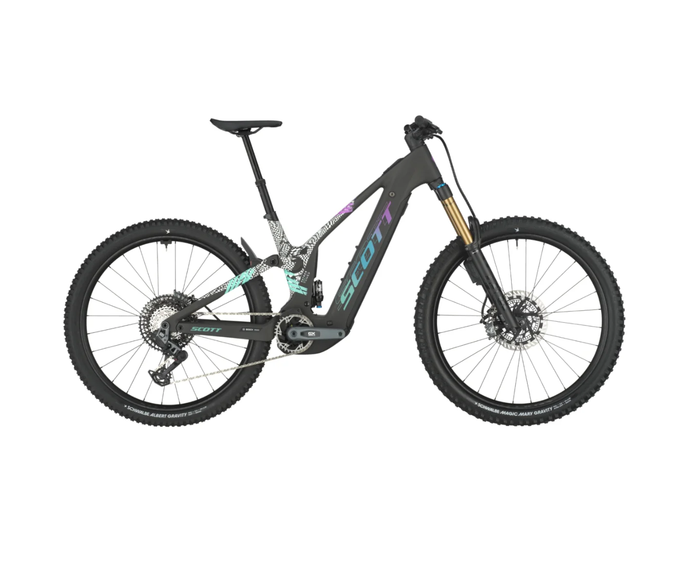

Freni con ABS per MTB
L'ABS (Anti-lock Braking System) sta iniziando a fare il suo ingresso anche nel mondo della mountain bike, specialmente nelle e‑MTB e nelle discipline gravity. Questo sistema impedisce alle ruote di bloccarsi durante frenate brusche, mantenendo aderenza e controllo.
✅ Vantaggi
- Minor distanza di frenata in terreni scivolosi o misti, grazie alla modulazione automatica della pressione :contentReference[oaicite:1]{index=1}.
- Migliore stabilità e controllo, poiché le ruote non si bloccano, evitando slittamenti o “tonfi” per over‑frenata :contentReference[oaicite:2]{index=2}.
- Sicurezza in condizioni estreme, soprattutto per rider meno esperti o su e‑bike pesanti, dove l’ABS agisce come un’efficace rete di sicurezza :contentReference[oaicite:3]{index=3}.
❌ Svantaggi
- Peso aggiuntivo dovuto ai sensori e moduli ABS, che può influire leggermente sul feeling della bicicletta :contentReference[oaicite:4]{index=4}.
- Costo superiore, perché l'installazione richiede componenti dedicati e sviluppo elettronico :contentReference[oaicite:5]{index=5}.
- Perdita del "feel" puro della frenata, che potrebbe non piacere ai rider molto tecnici :contentReference[oaicite:6]{index=6}.
- Efficienza ridotta su superfici sciolte come ghiaia profonda, dove a volte i rider fanno affidamento sul blocco controllato per manovrare meglio :contentReference[oaicite:7]{index=7}.
üìà Diffusione e adozione
I sistemi più diffusi arrivano dall'e-bike e dal trekking: **Bosch eMAGURA** hanno introdotto versioni ABS per MTB che migliorano la sicurezza in discesa e nei freni di potenza elevata :contentReference[oaicite:8]{index=8}.

Seconda generazione Bosch ABS Pro è stata progettata specificamente per MTB, con sensori più compatti, meno peso e algoritmi di modulazione avanzata :contentReference[oaicite:9]{index=9}.
⚙️ Come funziona l’ABS MTB
- I sensori rilevano la velocità di rotazione della ruota.
- Quando localizzano una perdita di grip o eccessiva decelerazione, il sistema modula la pressione frenante.
- L’ABS “pompa” la frenata istantaneamente, evitando il blocco e garantendo continuità di frenata e direzionalità :contentReference[oaicite:10]{index=10}.
⚠️ Quando può non essere adatto
- Rider tecnicamente esperti potrebbero preferire blocchi controllati per slittamenti intenzionali o manovre di precisione.
- In trail estremamente sciolti, come sabbia fine o ghiaia profonda, l'ABS potrebbe aumentare leggermente la distanza di frenata :contentReference[oaicite:11]{index=11}.
In sintesi, l'ABS nei freni MTB può essere un grande alleato per la **sicurezza, la stabilità e la confidenza**, soprattutto in condizioni difficili o per chi guida con meno esperienza.
← Torna alle curiosità